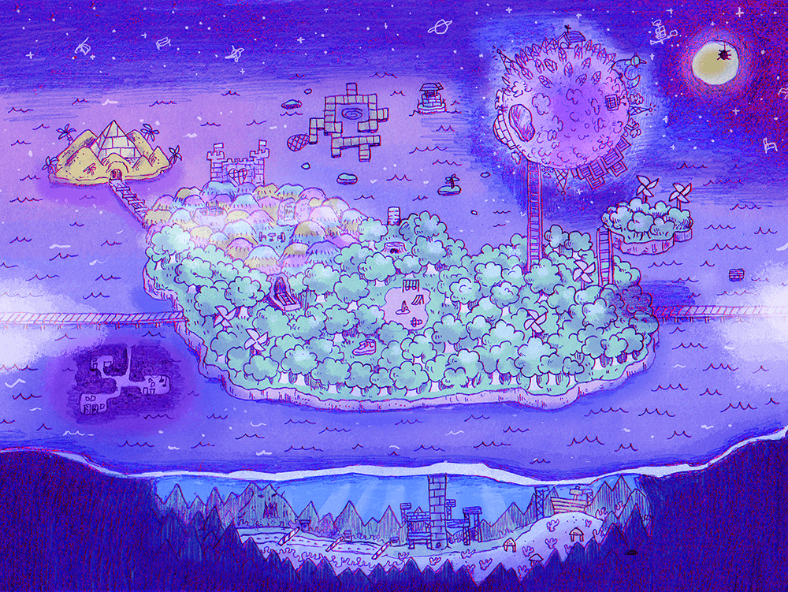

Explore um estranho mundo cheio cores, amigos e inimigos. Navegue através do encantador e do mundano para revelar um passado há muito esquecido.
Quando chegar a hora, o caminho que você escolher irá determinar seu futuro... e talvez o futuro de outros também.
OMORI é um vídeo game feito por OMOCAT. Tem estado em produção desde 2014 e foi lançado para Steam (PC/Mac) no dia 25 de dezembro de 2020.
Atualmente, OMOCAT está trabalhando com "Asia localization" e lançamentos para console.

OMORI © OMOCAT, LLC.